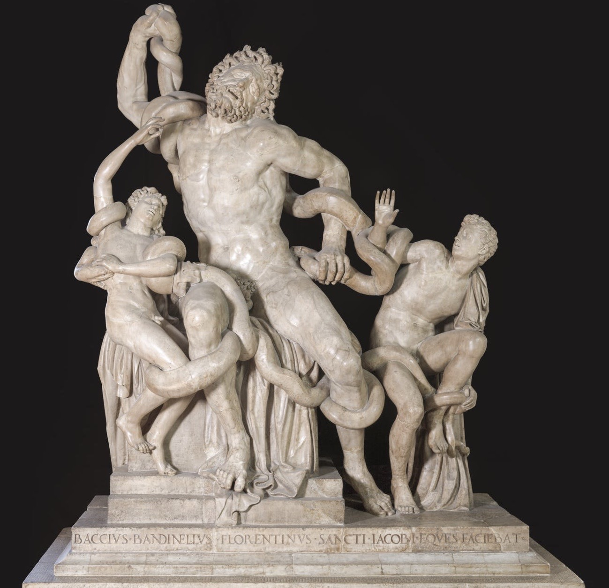

This statue group was immediately identified as the Laocoön. The story is that during the Trojan War, Laocoön, a priest of Apollo in the city of Troy, warned his fellow Trojans against taking in the wooden horse left by the Greeks outside the city gates. Athena and Poseidon, who were favouring the Greeks, sent two great sea-serpents which have wrapped their coils around Laocoön and his two sons and are killing them.
Found in 1506 